La evolución de la civilización moderna ha sido la historia del dominio sobre el electrón.
Desde los primeros experimentos con ámbar en la Grecia antigua hasta la complejidad sistémica
de una ciudad inteligente contemporánea.
ALBATROS TECH | ALBATROS PLUS | PROYECTO MAKER IoT
Mapa de Contenidos del Bloque III
🔌 3.1 Electrostática
Cargas en Reposo
Carga Eléctrica
Frotamiento, Contacto, Inducción
Ley de Coulomb
Campo y Potencial Eléctrico
ALBATROS TECH
Pantallas Táctiles Capacitivas
⚡ 3.2 Electrodinámica
Circuitos Inteligentes
Corriente DC vs AC
Ley de Ohm, Resistencia
Circuitos
Serie, Paralelo, Kirchhoff
ALBATROS TECH
Arduino, Sensores IoT, Domótica
🧲 3.3 Magnetismo
El Mundo Inalámbrico
Electromagnetismo
Oersted, Faraday, Lenz
Aplicaciones
Motores, Generadores, Transformadores
ALBATROS TECH
Carga Qi, MagLev, Eólica
🚀 Taller Maker
Electroimán y Control de Iluminación
BLOQUE IIIÍndice2
Introducción al Bloque III
La evolución de la civilización moderna ha sido, en esencia, la historia del dominio sobre el electrón.
Este bloque se estructura como un viaje conceptual que comienza en la quietud de la
electrostática, atraviesa el flujo vital de la electrodinámica y culmina en la interconexión inalámbrica
del electromagnetismo.
Objetivo
Comprender los principios fundamentales de la electricidad, el magnetismo y el electromagnetismo,
aplicando estos conceptos en tecnologías modernas como Internet de las Cosas (IoT), sensores
inteligentes, domótica y sistemas de energía renovable.
Enfoque
El Modelo Albatros prioriza el aprendizaje basado en la experiencia, donde la
curiosidad se convierte en el motor del descubrimiento y la técnica en el lenguaje de la creación.
Cada etapa está diseñada para transformar al alumno en un "prosumidor" tecnológico.
Competencias a Desarrollar
Modelar fenómenos naturales y aplicaciones tecnológicas
Analizar circuitos eléctricos complejos
Diseñar sistemas electromagnéticos funcionales
Integrar sensores y dispositivos IoT
Desarrollar proyectos de domótica básica
Liderar proyectos de energías renovables
Nota Destacada:"La electricidad es lo más parecido a la magia que existe en la
naturaleza ordinaria. Sin embargo, obedece reglas matemáticas perfectas que podemos predecir y
controlar."
— Adaptado de Richard Feynman
BLOQUE IIIIntroducción3
3.1
Electrostática: Cargas en Reposo
La electrostática constituye la piedra angular de la arquitectura eléctrica,
centrándose en el estudio de las cargas eléctricas en equilibrio y los campos que generan.
La materia no es inerte, sino un reservorio vibrante de fuerzas electromagnéticas.
3.1.1 Carga Eléctrica y Electrización
Objetivo
Lograr una comprensión profunda de las interacciones fundamentales entre partículas cargadas,
permitiendo modelar fenómenos naturales y aplicaciones como sensores biométricos y pantallas
táctiles capacitivas.
Conceptos Fundamentales
La materia está compuesta por átomos con protones (+) y electrones (−).
La carga eléctrica se mide en Coulombs (C). Un concepto crítico es la cuantización
de la carga: cualquier carga q es un múltiplo entero de la carga elemental del electrón
(1.6 × 10⁻¹⁹ C).
La interacción entre cargas se cuantifica mediante la Ley de Coulomb, fundamental
para el diseño de dispositivos de precisión:
Ley de Coulomb
F = k |q₁ · q₂| / r²
k = 8.99 × 10⁹ N·m²/C² | F = Fuerza (N) | q = Carga (C) | r = Distancia (m)
Interpretación
Cargas del mismo signo → Repulsión
Cargas de signo opuesto → Atracción
La fuerza disminuye con el cuadrado de la distancia
Campo Eléctrico y Potencial
Campo Eléctrico
E = F/q = k Q/r²
Unidad: N/C ó V/m
Potencial Eléctrico
V = W/q = k Q/r
Unidad: Voltio (V)
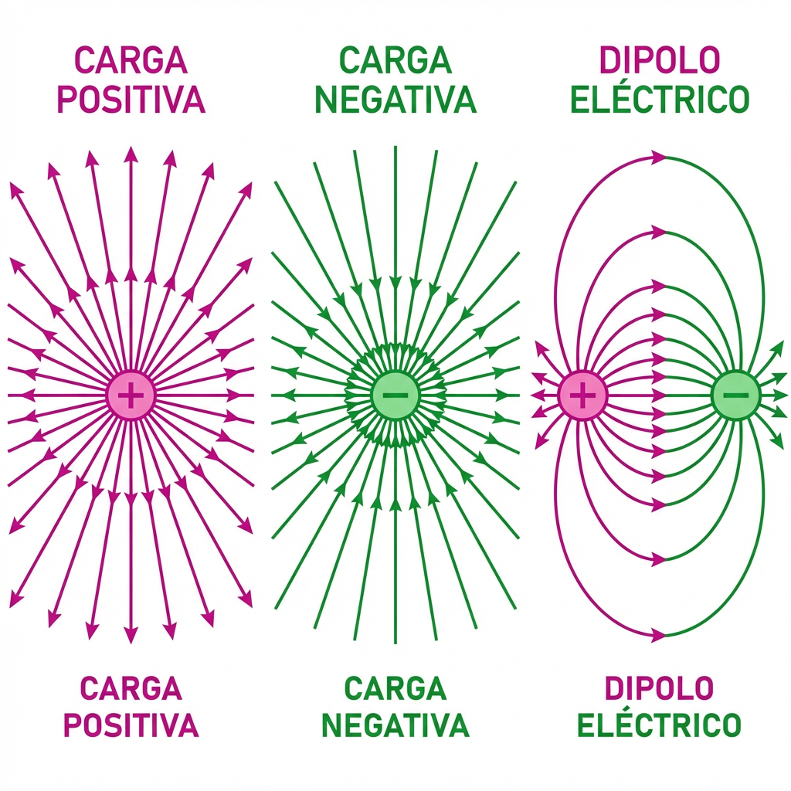
BLOQUE III3.1 Ley de Coulomb6
3.1.3 Procedimientos Experimentales
Demostración de la Serie Triboeléctrica
Frotar parejas de materiales (vidrio-lana, PVC-seda) y acercar a un
electroscopio
Anotar la dirección de la deflexión de las láminas
Determinar qué material quedó cargado positiva o negativamente
Carga por Inducción
Colocar esfera conductora neutra sobre soporte aislante
Acercar barra de ebonita cargada SIN tocar la esfera
Tocar el lado opuesto de la esfera con el dedo (conexión a tierra)
Retirar dedo primero, luego la barra. Verificar carga con electroscopio
Clasificación de Materiales (Infografía)
Tipo
Característica
Ejemplos
Aplicación
Conductores
Electrones se mueven libremente
Oro, Cobre, Grafeno
Cableado, electrodos
Aislantes
Electrones fuertemente ligados
Vidrio, Plástico
Carcasas, protección
Semiconductores
Conductividad variable
Silicio, ITO
Transistores, pantallas
Nota Destacada: En
dispositivos móviles, la selección de materiales dieléctricos para
protección de pantallas es crítica. Deben tener permitividad eléctrica específica para que el campo del
dedo interactúe con los sensores. Un dieléctrico inadecuado causa "fantasmas" táctiles.
BLOQUE III3.1 Procedimientos7
3.1.4 Mapa Mental: Electrostática
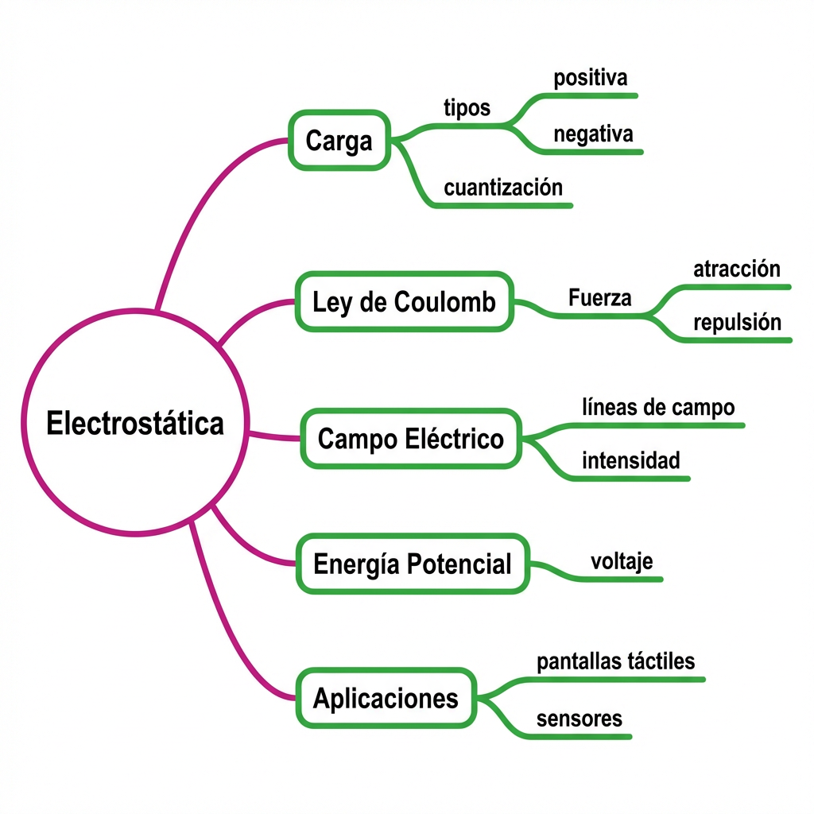
Mini Actividades
Pregunta de Reflexión: ¿Por qué los camiones que transportan combustible llevan una
cadena metálica que arrastra por el suelo?
Ejercicio Rápido: Calcula la fuerza entre dos cargas de 2 µC separadas por 10 cm.
Opinión: ¿Cómo crees que la electrostática influye en la limpieza de microchips
durante su fabricación?
Tip Extra: Las
descargas electrostáticas (ESD) pueden destruir componentes electrónicos
en milisegundos. Siempre usa una pulsera antiestática al manipular placas de circuito
como Arduino para garantizar la integridad de tus proyectos.
Profesionales
Profesionales con Valor: El respeto por la propiedad intelectual y la honestidad
en la investigación son valores fundamentales. Los estudiantes deben valorar el trabajo de sus
compañeros y reconocer las fuentes de información, practicando conducta ética.
BLOQUE III3.1 Mapa Mental8
3.1.5 Práctica Integradora
P
Caso: Sistema de Detección de Guantes
Escenario: Una empresa de logística necesita detectar si los trabajadores llevan
guantes de seguridad (aislantes) antes de operar una consola táctil.
Problema: Explica por qué una pantalla capacitiva estándar fallaría con guantes
aislantes y propone una solución técnica basada en inducción o materiales conductores especiales.
Espacio para respuesta del estudiante...
Reto Digital ALBATROS TECH
Utilizando un simulador de circuitos, modela una matriz X-Y de electrodos de ITO y
explica mediante un breve ensayo digital cómo el controlador traduce un cambio en la capacitancia
mutua en una coordenada de pantalla. El reto es optimizar la resolución del sensor minimizando
el número de electrodos.
📚 Recursos: Simuladores como PhET de la Universidad de Colorado permiten visualizar
la Ley de Coulomb en tiempo real. Bibliografía técnica de la American Physical Society sobre ciencia
de materiales.
Conclusión 3.1
La electrostática no es simplemente el estudio de globos que pegan al cabello; es la ciencia de la
interacción a distancia. Sin la comprensión de las fuerzas de Coulomb y la manipulación
de campos eléctricos, la tecnología de consumo actual no existiría.
BLOQUE III3.1 Práctica9
ALBATROS TECH: Pantallas Táctiles Capacitivas
Aplicación
Las pantallas táctiles capacitivas son una maravilla del diseño de ingeniería que aprovecha la
conductividad del cuerpo humano. Funcionan detectando distorsiones en un campo
eléctrico constante.
Componentes de una Pantalla Capacitiva
Componente
Función Física
Material
Vidrio de Cubierta
Dieléctrico protector
Vidrio reforzado químicamente
Electrodos X-Y
Rejilla capacitiva de detección
Óxido de Indio y Estaño (ITO)
Controlador IC
Escanea capacitancia + algoritmos
Microprocesador dedicado
Adhesivo Óptico
Une capas sin alterar campo
Polímero acrílico (OCA)
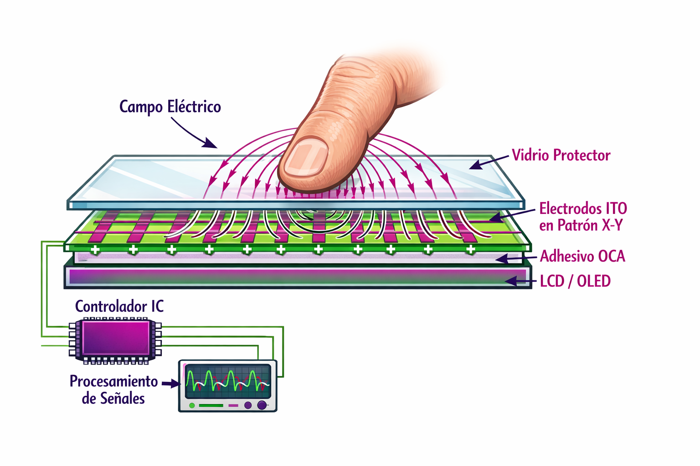
Funcionamiento
El cuerpo humano es conductor eléctrico. Cuando un dedo se aproxima a la rejilla de electrodos, se crea
un condensador entre el dedo y los sensores. Esto provoca una caída en la
capacitancia mutua en ese punto. El controlador IC detecta esta variación en milisegundos
y calcula las coordenadas mediante interpolación, permitiendo funciones como el multitouch.
💬 ¿Por qué no funciona con guantes normales?
Los materiales aislantes no alteran el campo eléctrico. Los guantes capacitivos tienen
hilos conductores tejidos que sí modifican la capacitancia, permitiendo la
interacción con la pantalla.
BLOQUE III3.1 Tech - Pantallas10
3.2
Electrodinámica: Circuitos Inteligentes
La electrodinámica es el estudio de las cargas eléctricas en movimiento.
Los estudiantes pasan de la teoría estática a la acción dinámica, aprendiendo a
canalizar la energía para alimentar sistemas inteligentes que reaccionan al entorno.
3.2.1 Corriente Eléctrica: DC vs AC
Objetivo
Dominar el análisis de circuitos eléctricos, comprendiendo las leyes que rigen el flujo de
corriente y la disipación de energía. Diseñar prototipos de domótica básica usando
microcontroladores.
Conceptos Fundamentales
La corriente eléctrica (I) es el flujo neto de carga por unidad de tiempo, medida en
Amperios (A). La diferencia entre DC y AC radica en la dirección del flujo.
Comparativa: Corriente Continua vs Alterna
DC - Corriente Continua
Electrones viajan en un solo sentido
Voltaje constante
Fuentes: Baterías, USB, paneles solares
Uso: Electrónica, smartphones, IoT
AC - Corriente Alterna
Polaridad se invierte cíclicamente
V(t) = V₀ sin(2πft)
Fuentes: Red eléctrica, generadores
Uso: Electrodomésticos, industria
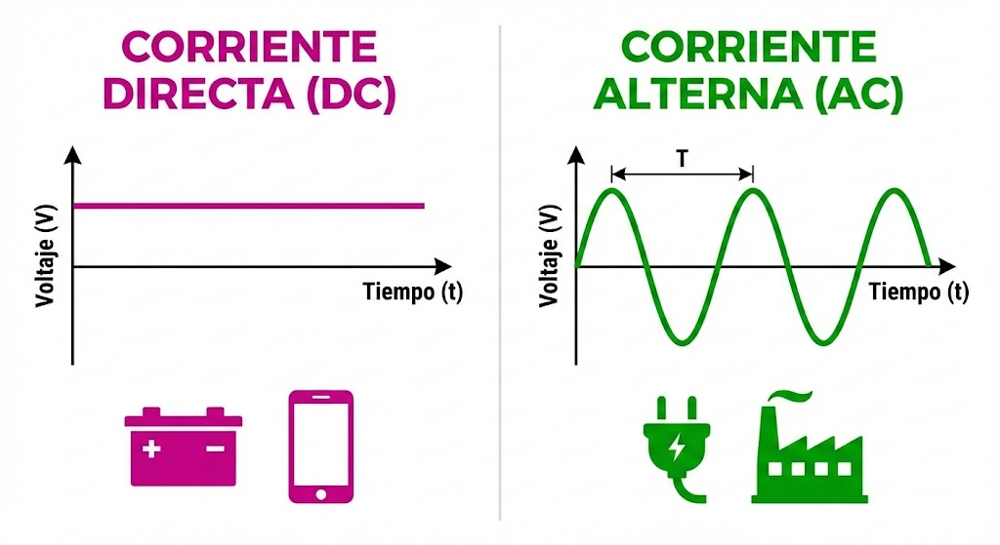
BLOQUE III3.2 DC vs AC12
3.2.2 Ley de Ohm y Resistencia
La Ley de Ohm es la herramienta predictiva por excelencia del ingeniero eléctrico:
Ley de Ohm
V = I · R
V = Voltaje (V) | I = Intensidad (A) | R = Resistencia (Ω)
Esta ley permite calcular la resistencia necesaria para proteger un LED o el voltaje
requerido para mover un motor en un sistema domótico.
Potencia Eléctrica
P = V · I = I² · R = V² / R
Unidad: Watt (W)
Infografía: Comparativa DC vs AC (Tabla)
Característica
DC
AC
Fuente común
Baterías, USB, Solar
Enchufes, Generadores
Uso principal
Electrónica de control, IoT
Electrodomésticos, industria
Transporte
Difícil a larga distancia
Eficiente con transformadores
Seguridad
Bajo riesgo (<24V)
Alto riesgo (110V/220V)
Frecuencia
N/A
60 Hz (México)
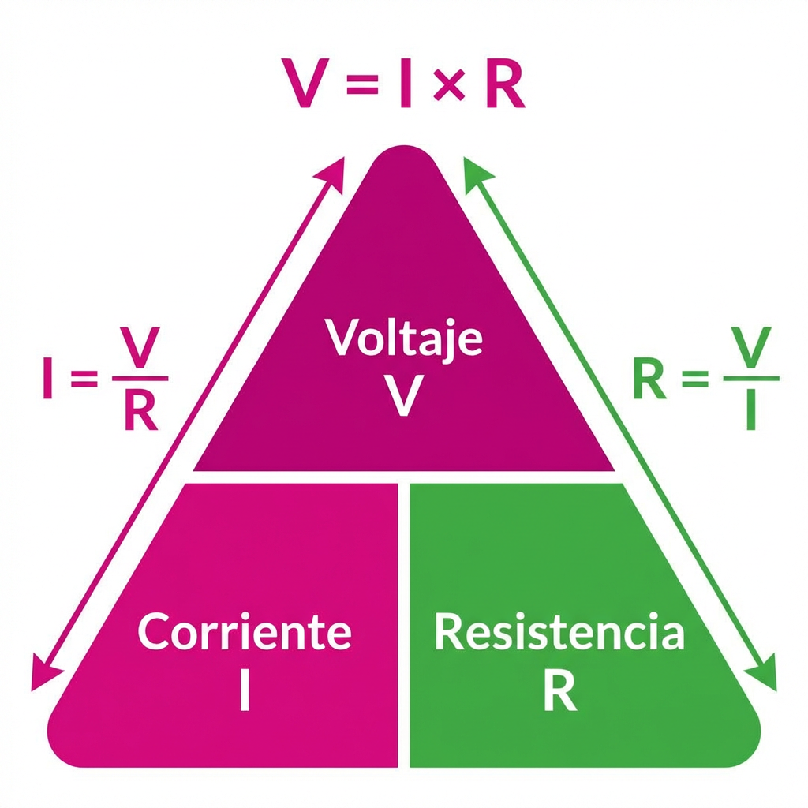
BLOQUE III3.2 Ley de Ohm13
3.2.3 Circuitos Serie y Paralelo
Circuitos en SERIE
Componentes conectados uno tras otro.
Corriente igual: I = I₁ = I₂ = I₃
Voltaje se reparte: V = V₁ + V₂ + V₃
R_total = R₁ + R₂ + R₃
Desventaja: Si un componente falla, todo el circuito se
abre.
Circuitos en PARALELO
Componentes en ramas separadas.
Voltaje igual: V = V₁ = V₂ = V₃
Corriente se divide: I = I₁ + I₂ + I₃
1/R_total = 1/R₁ + 1/R₂ + 1/R₃
Ventaja: Si uno falla, los otros funcionan (casa).
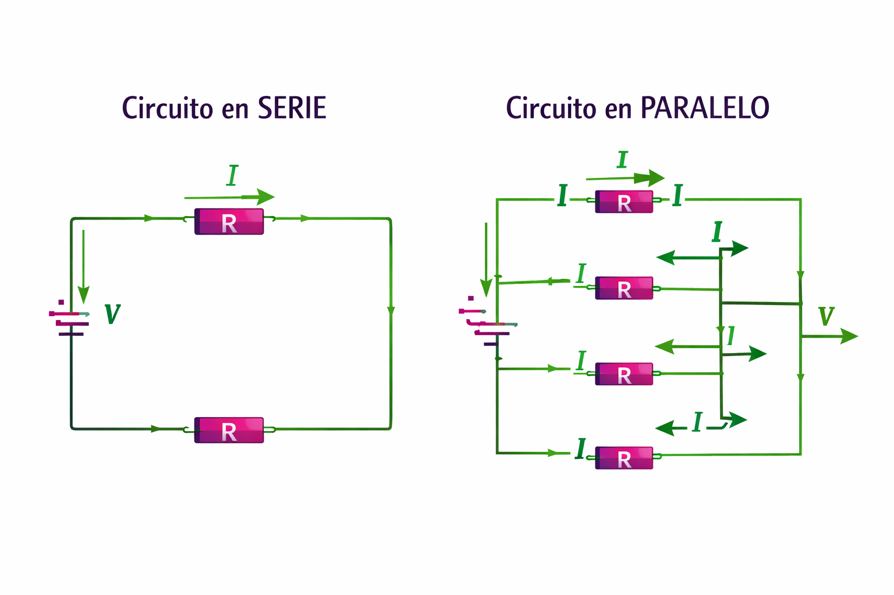
Leyes de Kirchhoff
Ley de Nodos (LCK)
∑ I_entrada = ∑ I_salida
Conservación de carga
Ley de Mallas (LVK)
∑ V = 0
Conservación de energía
BLOQUE III3.2 Circuitos14
3.2.4 Procedimientos y Cálculos
Cálculo de Resistencia para LEDs
R = (V_fuente − V_LED) / I_LED
Ejemplo: Para LED rojo (V=2V, I=20mA) con fuente de 5V: R = (5-2)/0.02 = 150Ω
Montaje en Protoboard
Identificar líneas de alimentación (buses + y −) en los lados
Conectar la fuente de alimentación a los buses
Insertar componentes en los nodos centrales (filas conectadas)
Usar cables jumper para conexiones entre componentes
Verificar con multímetro antes de energizar
Nota Destacada: Al
trabajar con Arduino, la estabilidad del voltaje es primordial.
Una caída de tensión (brownout) causada por un motor conectado directamente puede provocar errores de
lectura o reinicio del programa. Siempre separa las líneas de potencia de las de señal.
Tip Extra: Si un
circuito no funciona, usa el "camino del electrón": verifica desde
el polo (+) de la fuente, componente por componente, hasta el polo (−). El 90% de los fallos son
conexiones sueltas o cables en nodos incorrectos.
Mini Actividades
Reto de Lógica: Si tienes dos resistencias de 100Ω en serie, ¿cuál es R_total? ¿Y en
paralelo?
Reflexión: ¿Por qué los dispositivos electrónicos usan transformadores (cubos de carga)?
BLOQUE III3.2 Procedimientos15
3.2.5 Mapa Mental: Electrodinámica
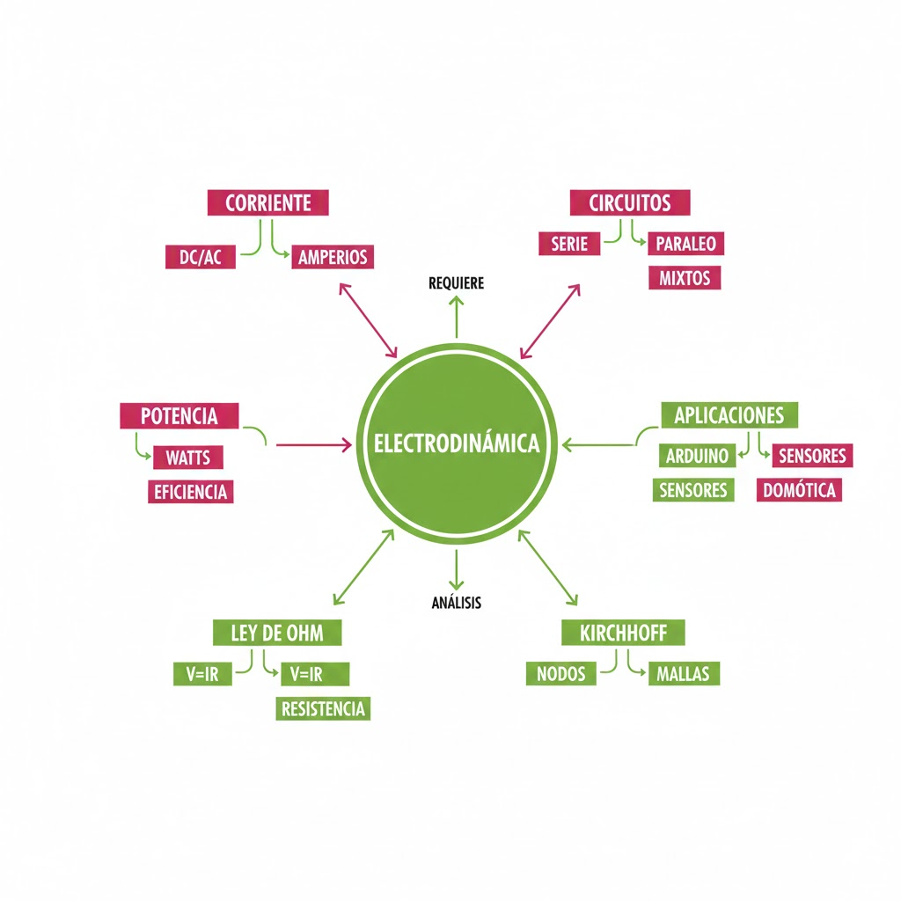
P
Práctica Integradora: Habitación Inteligente
Diseñar el esquema de una habitación inteligente que incluya:
Sistema de iluminación en paralelo (si una bombilla falla, las otras siguen)
Sensor de temperatura que active un ventilador mediante un relé
Entregar: Diagrama de conexiones y cálculo de potencias.
Conclusión 3.2
El dominio de los circuitos inteligentes es el primer paso hacia la creación de Smart
Cities.
Entender cómo fluye la energía y cómo condicionarla mediante lógica de programación permite visualizar
soluciones a gran escala para el ahorro de recursos y la automatización de procesos.
Profesionales
Profesionales con Valor: La responsabilidad social implica diseñar sistemas
seguros para el usuario final. Nunca se compromete la seguridad por el costo. Seguir las normas
internacionales de instalaciones eléctricas previene accidentes.
BLOQUE III3.2 Mapa Mental16
ALBATROS TECH: Sensores IoT y Domótica
IoT
El Internet de las Cosas (IoT) permite que objetos físicos se conecten a la red,
intercambien datos y tomen decisiones inteligentes. En el centro: microcontroladores y sensores.
Sensores para Smart Cities
Sensor
Función
Impacto Social
Ultrasónico (HC-SR04)
Gestión de tráfico y parqueo
Reducción de emisiones
LDR (Fotoresistencia)
Alumbrado público adaptativo
Ahorro energético municipal
Humedad de Suelo
Riego automatizado
Conservación del agua
PIR (Movimiento)
Seguridad urbana
Vigilancia inteligente
DHT22
Temperatura y humedad
Confort y eficiencia HVAC
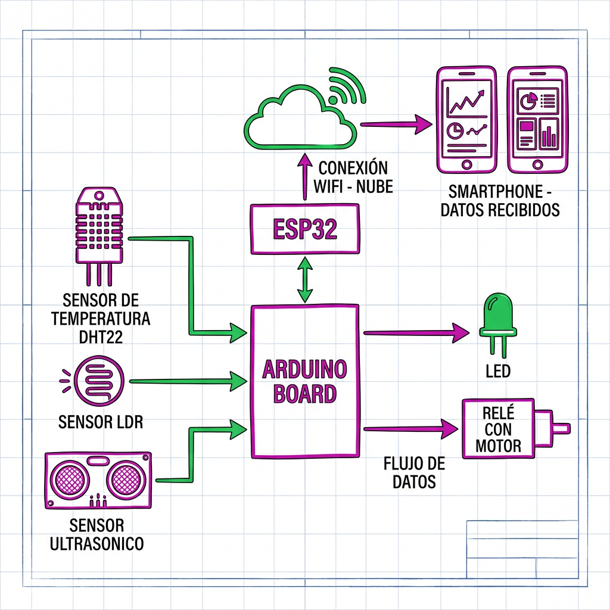
Reto Digital ALBATROS TECH
Usando el IDE de Arduino, escribe un código que lea un potenciómetro y ajuste la
intensidad de un LED mediante PWM. Reto plus: enviar datos por conexión serie para
graficar el consumo de energía en tiempo real.
BLOQUE III3.2 Tech - IoT17
3.3
Magnetismo y Electromagnetismo
El magnetismo es la fuerza invisible que mueve al mundo moderno. Desde la generación
de energía hasta la carga inalámbrica, el electromagnetismo es el lenguaje universal
de la energía y la comunicación.
3.3.1 Imanes y Campo Magnético Terrestre
Objetivo
Comprender la naturaleza dual de la electricidad y el magnetismo. Dominar los principios de
inducción electromagnética de Faraday y Lenz, aplicándolos a motores, generadores y tecnologías
inalámbricas. Capacitar para liderar proyectos de energías renovables.
Propiedades de los Imanes
Todo imán tiene dos polos: Norte (N) y Sur (S)
No existen monopolos magnéticos
Polos iguales se repelen, opuestos se atraen
Las líneas de campo salen del polo N y entran al polo S
Campo Magnético Terrestre
La Tierra posee su propio campo magnético que actúa como escudo protector contra el viento solar
y permite el uso de la brújula para navegación.
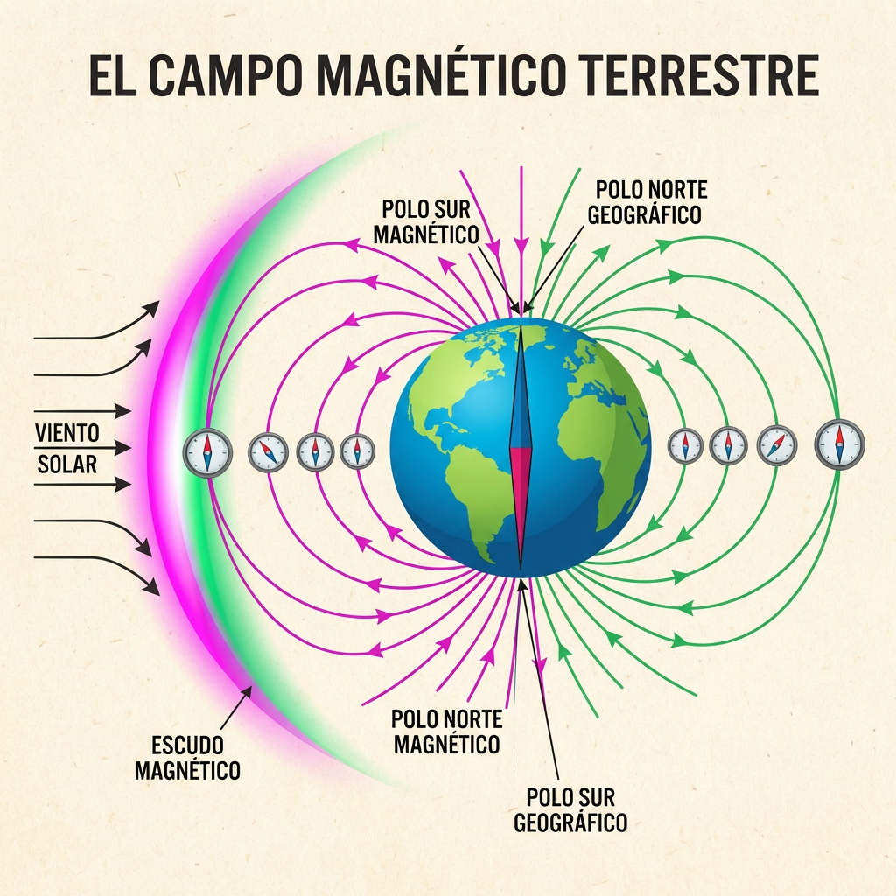
Nota Curiosa: El
campo magnético terrestre se invierte aproximadamente cada
300,000 años. La última inversión fue hace 780,000 años. Actualmente, la intensidad está
disminuyendo a razón de 1.7% por siglo.
BLOQUE III3.3 Magnetismo19
3.3.2 Oersted y Faraday: Inducción Electromagnética
El electromagnetismo surge de la relación intrínseca entre corrientes y campos:
Experimento de Oersted (1820)
Corriente genera Magnetismo
Una corriente eléctrica crea un campo magnético circular alrededor del conductor.
Regla Mano Derecha:
Pulgar → Dirección de corriente
Dedos curvados → Campo magnético
Ley de Faraday (1831)
Magnetismo genera Electricidad
Un campo magnético variable induce un voltaje (fem) en un circuito.
ℰ = −N (dΦ_B / dt)
Ley de Lenz
El sentido de la corriente inducida se opone a la variación del flujo que la
produce.
Es una manifestación de la conservación de la energía.
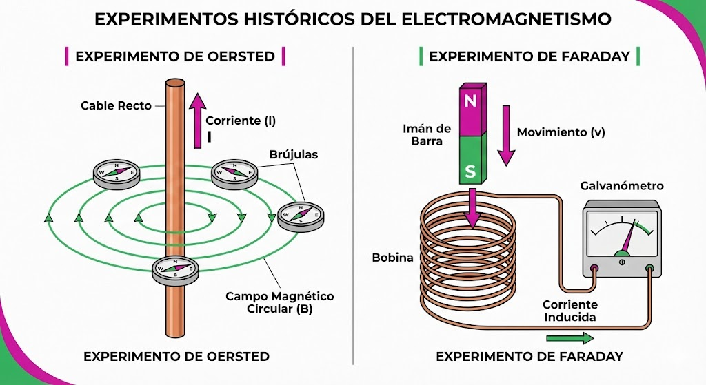
BLOQUE III3.3 Inducción20
3.3.3 Motores, Generadores y Transformadores
Los dispositivos electromagnéticos son pilares de la industria moderna:
Dispositivo
Conversión
Principio
Aplicación
Motor
Eléctrica → Mecánica
Fuerza de Lorentz
Vehículos, ventiladores
Generador
Mecánica → Eléctrica
Ley de Faraday
Plantas eléctricas, eólica
Transformador
Modifica voltaje AC
Inducción mutua
Transmisión de energía
Fuerza sobre conductor
F = B · I · L
F en Newtons, B en Tesla
Ecuación Transformador
V_s/V_p = N_s/N_p = I_p/I_s
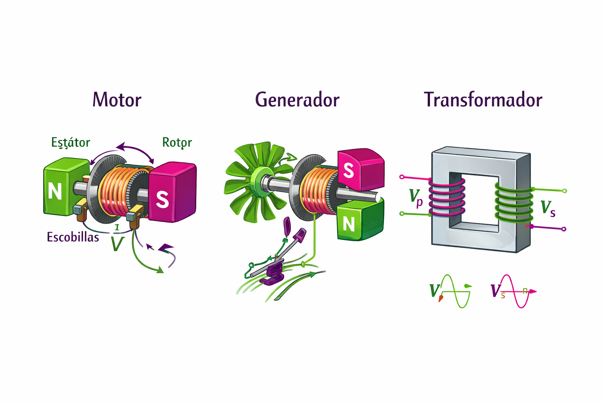
Nota Destacada: Los
transformadores permiten transmitir electricidad a grandes
distancias. Las plantas generan a ~10,000V, se eleva a ~230,000V para transmisión (reduciendo
pérdidas I²R), y se baja a 120V/240V en tu casa.
BLOQUE III3.3 Dispositivos21
3.3.4 Procedimientos Experimentales
Construcción de Motor Sencillo
Usar pila AA, imán de neodimio y cable de cobre esmaltado
Formar una espira con el cable, dejando extremos rectos
Raspar el esmalte de un lado de los extremos (conmutador)
Colocar la espira sobre soportes metálicos conectados a la pila
Observar la rotación continua por la fuerza de Lorentz
Verificación de Ley de Faraday
Conectar bobina de múltiples espiras a un galvanómetro
Introducir y extraer rápidamente un imán de neodimio
Notar que la intensidad depende de velocidad y número de espiras (N)
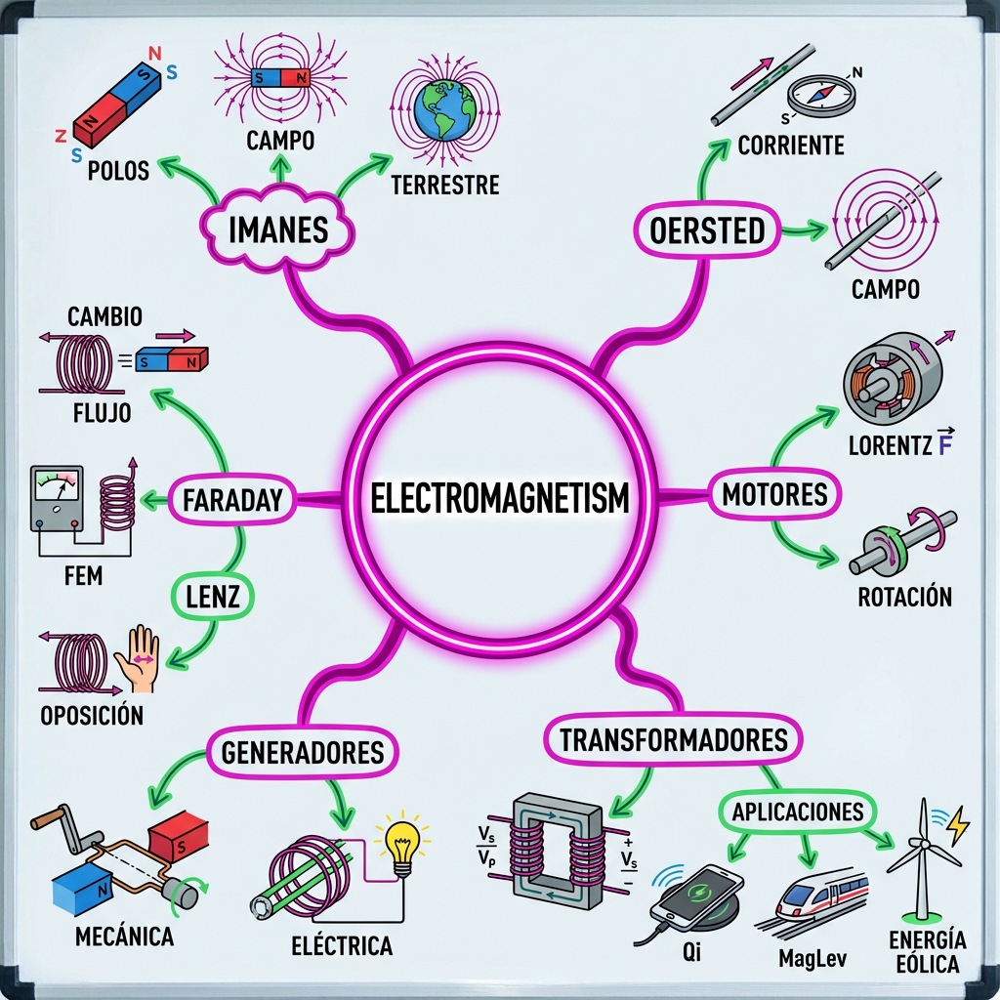
BLOQUE III3.3 Procedimientos22
ALBATROS TECH: Carga Qi, MagLev y Energía Eólica
Tecnologías de Transporte y Carga Inalámbrica
Tecnología
Principio Físico
Aplicación
Carga Qi
Inducción resonante
Smartphones, wearables
MagLev (EMS)
Atracción magnética controlada
Trenes sobre riel ferromagnético
MagLev (EDS)
Repulsión con superconductores
Altísima velocidad (>600 km/h)
Generador Eólico
Inducción de Faraday
Producción de energía limpia
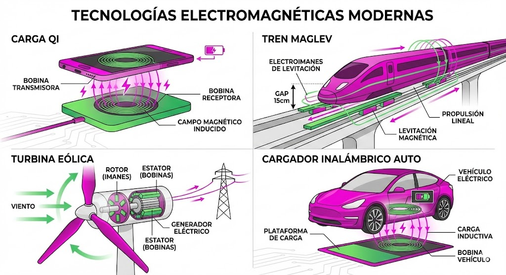
Nota MagLev: En los
trenes MagLev, la eliminación del contacto físico suprime la
fricción mecánica, permitiendo velocidades que superan los 600 km/h. Los electroimanes se ajustan
miles de veces por segundo para mantener el tren a distancia constante de la guía.
Mini Actividades
Pregunta: Si detienes el movimiento de un imán dentro de una bobina, ¿qué sucede con la
corriente?
Debate: ¿Es el MagLev viable para carga pesada o solo para pasajeros?
BLOQUE III3.3 Tech23
TALLER MAKER DEL BLOQUE III
El Taller Maker es el corazón práctico del modelo educativo Albatros,
donde la teoría se convierte en tangible y la competencia se vive
a través del diseño y la resolución de problemas reales.
Opción 1: Grúa Magnética (Electroimán de Alta Potencia)
Objetivo
Construir un electroimán funcional integrado en una estructura de grúa que pueda
levantar y mover objetos metálicos, aplicando los principios del electromagnetismo.
Materiales
Clavo de hierro de 10 cm (núcleo)
5 metros de hilo de cobre esmaltado
Batería de 9V
Interruptor
Cartón y poleas para estructura de grúa
Proceso
Realizar bobinado apretado y uniforme alrededor del clavo
Conectar extremos del cable a batería con interruptor en medio
Construir estructura de grúa con cartón (base, torre, brazo)
Integrar sistema de poleas para movimiento del electroimán
Probar levantamiento de clips, tornillos u objetos metálicos
Clave del éxito: A
mayor número de vueltas (N), mayor fuerza magnética.
Usa núcleo de hierro dulce de alta permeabilidad para canalizar las líneas de flujo eficientemente.
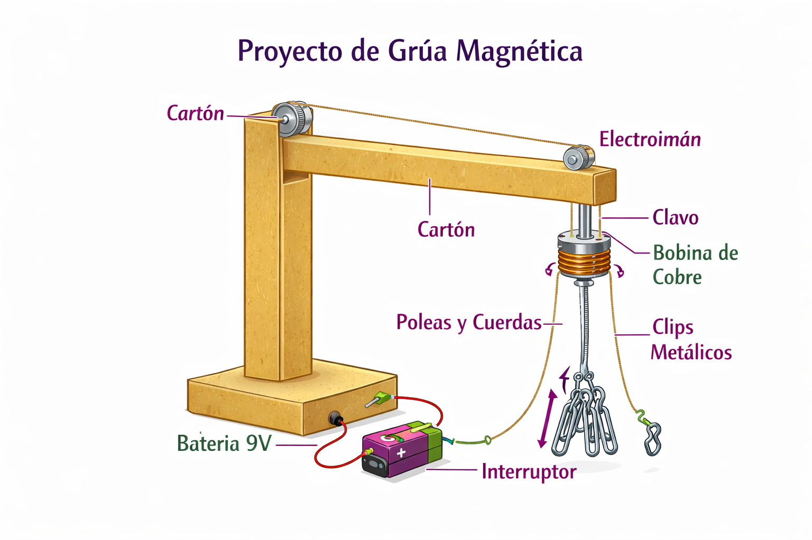
BLOQUE IIITaller Maker 125
Opción 2: Control de Iluminación Automático (Domótica)
Objetivo
Diseñar un sistema de iluminación automático que encienda una luz cuando oscurece y
la apague con luz natural, aplicando conceptos de sensores y lógica de control.
Materiales
Arduino Nano o ESP32
Sensor LDR (fotoresistencia)
Resistencia de 10 kΩ
LED de alta potencia o foco 12V
Módulo relé 5V
Protoboard y cableado
Lógica de Control
El sensor LDR actúa como divisor de tensión. Arduino lee el valor analógico: si es menor a un
umbral (oscuridad), activa el relé para encender la luz.
// CONTROL DE ILUMINACIÓN AUTOMÁTICO
const int LDR_PIN = A0;
const int RELAY_PIN = 7;
const int UMBRAL = 300;
void setup() {
pinMode(RELAY_PIN, OUTPUT);
Serial.begin(9600);
}
void loop() {
int valorLuz = analogRead(LDR_PIN);
Serial.println(valorLuz);
if (valorLuz < UMBRAL) { digitalWrite(RELAY_PIN, HIGH); // Encender luz } else { digitalWrite(RELAY_PIN,
LOW); // Apagar luz } delay(500); }
Reto Plus ALBATROS
Añadir un sensor PIR de movimiento: la luz solo se enciende si ADEMÁS de
oscuridad, se detecta movimiento. Aplicar lógica booleana:
if (oscuro AND movimiento)
BLOQUE IIITaller Maker 226
Conclusión General del Bloque III
Resumen
El recorrido desde la bombilla hasta las Smart Cities nos revela que el progreso no es lineal,
sino una red de descubrimientos interconectados. Al estudiar la electricidad
y el magnetismo bajo el modelo Albatros, el estudiante desarrolla una mentalidad de
liderazgo e innovación.
Competencias Desarrolladas
✓ Modelar fenómenos electrostáticos y aplicaciones como pantallas táctiles
✓ Analizar circuitos eléctricos con Leyes de Ohm y Kirchhoff
✓ Comprender la inducción electromagnética de Faraday y Lenz
✓ Diseñar sistemas IoT con Arduino y sensores inteligentes
✓ Aplicar conceptos en proyectos Maker reales
✓ Visualizar el impacto social de tecnologías como MagLev y energía eólica
Valores
Profesionales con Valor: La excelencia académica, la calidez humana y la
audacia tecnológica se unen para formar ciudadanos capaces de iluminar el futuro con
responsabilidad, ética y una inquebrantable voluntad de servicio.
Reflexión
Final: "La capacidad de entender cómo una pantalla siente un toque
o cómo un tren puede flotar sobre el suelo empodera a los jóvenes para ser los creadores de las
soluciones del mañana."

 Mini Actividades
Mini Actividades
 Reto Digital ALBATROS TECH
Reto Digital ALBATROS TECH